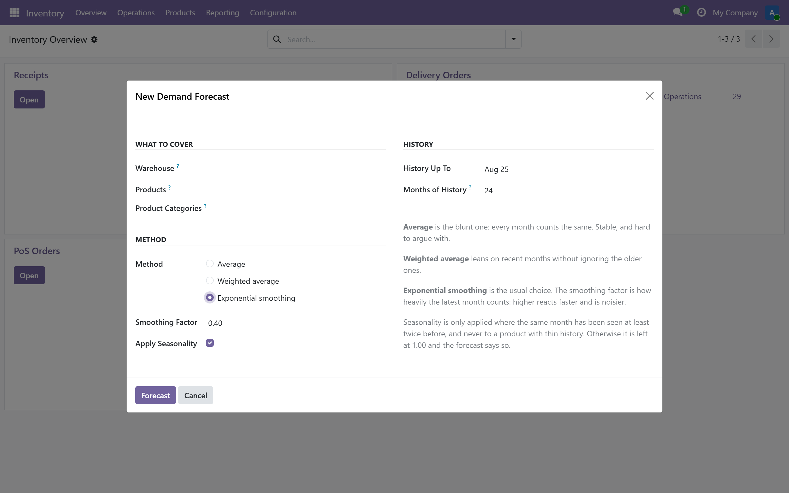
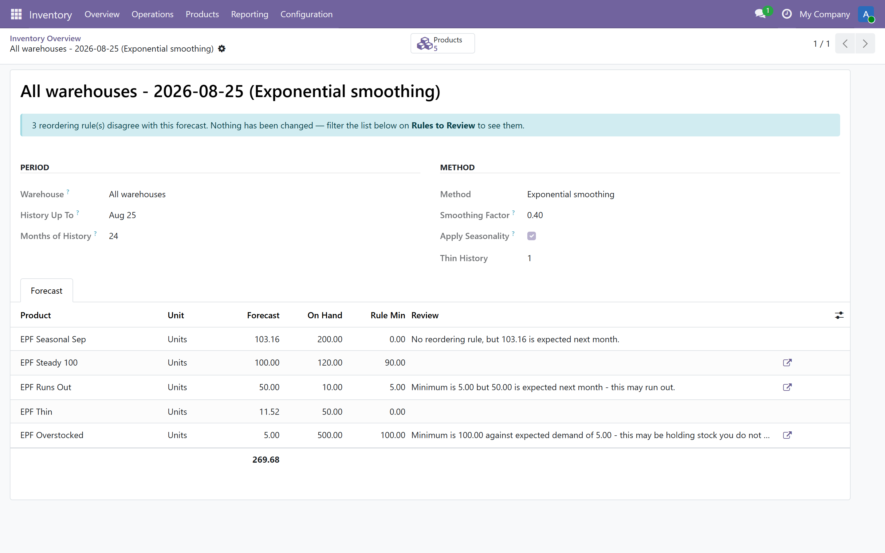
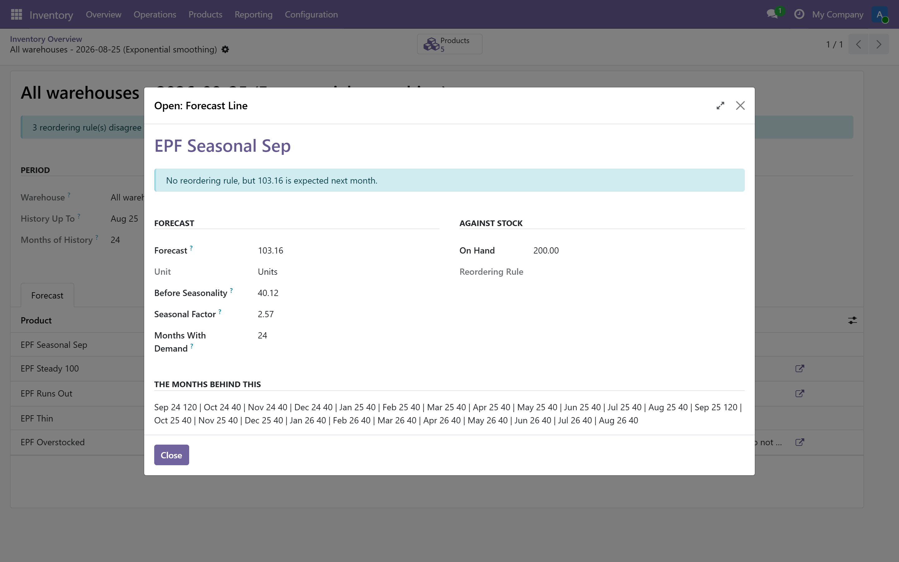
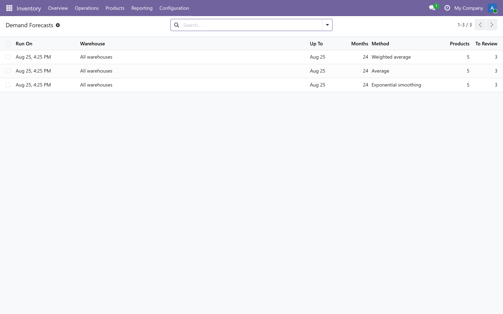

Forecast what customers will actually order next month - from your own sales history, with the months behind every number shown on the line.
The forecasted quantity on a product adds up the documents already in the system: confirmed sales orders going out, purchase orders coming in. It is accurate, and it is not a forecast of demand. It tells you nothing about the orders that have not been placed yet.
So the reordering rule minimum gets set once, from memory, and then nobody revisits it. Some products run out every few months. Others quietly hold a year of stock. Both look completely normal on the replenishment screen.
Forecasts demandMonthly demand per product and warehouse, taken from confirmed sales orders and bucketed by the month the customer ordered. |
Shows its workingEvery line carries the months it came from, the demand in each of them, and the seasonal factor applied. |
Audits your rulesCompares each forecast against the reordering rule that already exists, and names the ones worth a second look. |
A product that sold in two months out of twenty-four has two months of evidence, not twenty-four. It still gets a number - a buyer would rather have a figure and a warning than a blank cell - but the line is flagged Thin History and the seasonal adjustment is withheld entirely.
A forecast that will not admit how little it knows is worse than no forecast, because somebody signs a purchase order against it.
Small differences are not reported. A rule has to be off by more than a quarter of the forecast before it is raised, because a report that queries every rounding difference is a report people learn to close.




Bugs and configuration problems are fixed promptly. If your demand moves in a shape none of these three methods catch, tell me about it - that is how the next method gets chosen.
| 💬WhatsApp +20 100 780 2335 | ✉️Email Support |
mohamed.yaseen.dahab@gmail.com · +20 100 780 2335